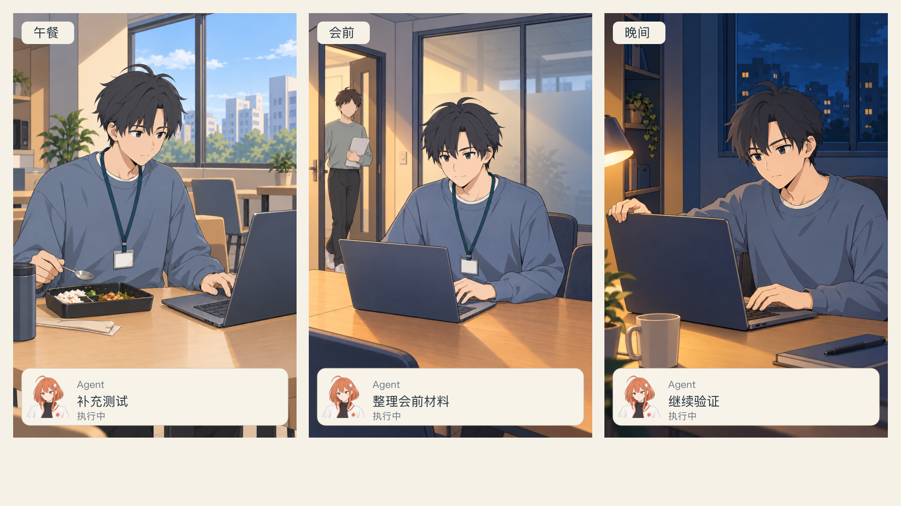
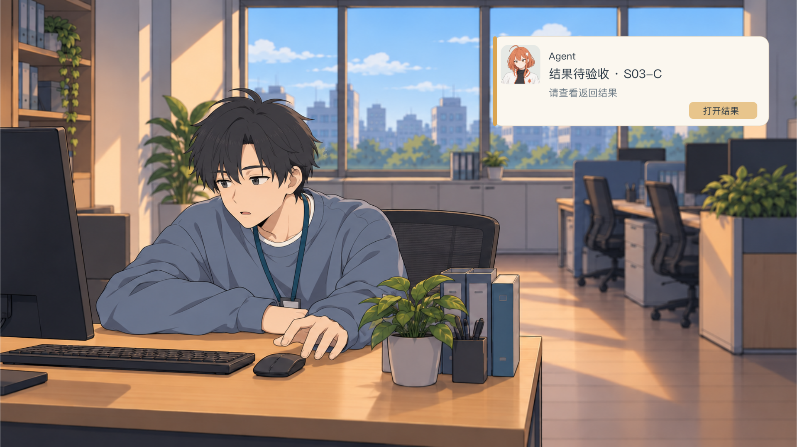
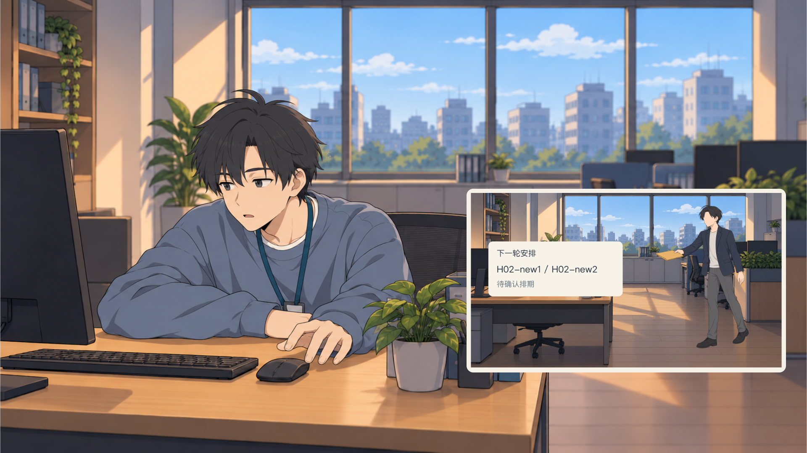
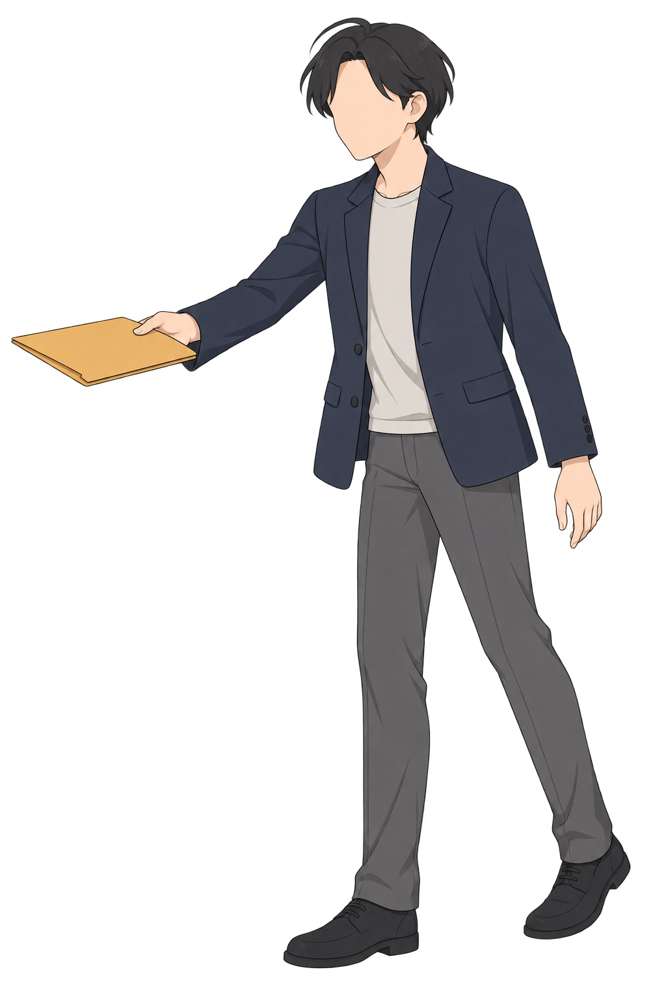
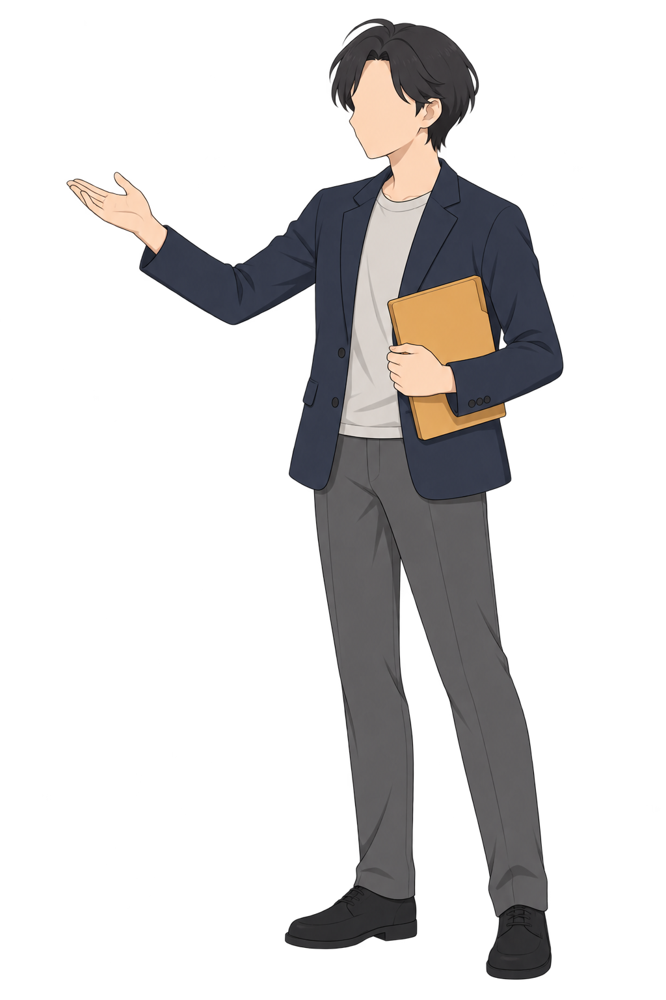
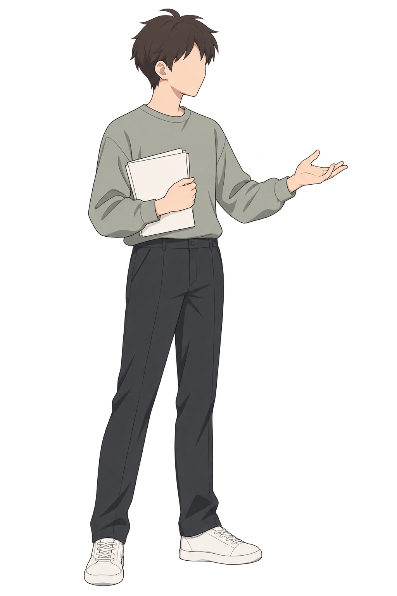

02–06 · 故事场景素材
新美术与代表构图检查。当前全片播放器仍为基础演出；本页用于接入前检查，不是全段动画。
全片基础预览素材与来源清单制作说明午餐 / 会前 / 晚间：三画幅并行
三个实际场景始终同屏，人物行动与任务状态各自关联。底部留给统一字幕。

休息被打断：主画面反应 + 通知窗

负责人追加任务：独立行动小窗
示范主画面与小窗的并行关系；正式02动作需补程序员接收姿态，不直接复用03困倦表情。

新空间与角色摆位
搁置需求：列表 / 打开
feedback保持候选、待评估；查看不会自动改变01的已排期或已验收状态。界面有可编辑SVG与PNG版。
新增完整角色姿态



沿用负责人和同事原设定；原图保留原路径，以共享引用供后续章使用。人物不拆肢体、不拉伸、不叠化两个身体。画面内任务名称是道具内容，研究范围限定仍在正式分镜保留。